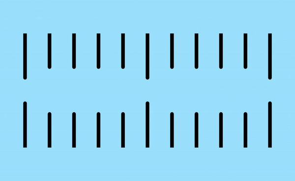
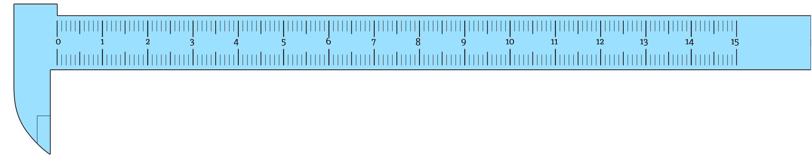

How The Vernier Calipers Work


Vernier calipers should be a common sight for anyone that has been through highschool. A tool found in the lab to get more accurate measurements beyond the simple ruler.


The vernier scale works with one simple twist. That it is 1/10th shorter than the main scale.

This creates a rhythm of offsets
It's this pattern that gives the tool its accuracy.
For any of the markings to align, They'd have to travel the difference.

That's How The Vernier Calipers Work
This is an exploration of doing interactive educational articles, like the New York times. The content is ported from an educational video I created some years earlier.